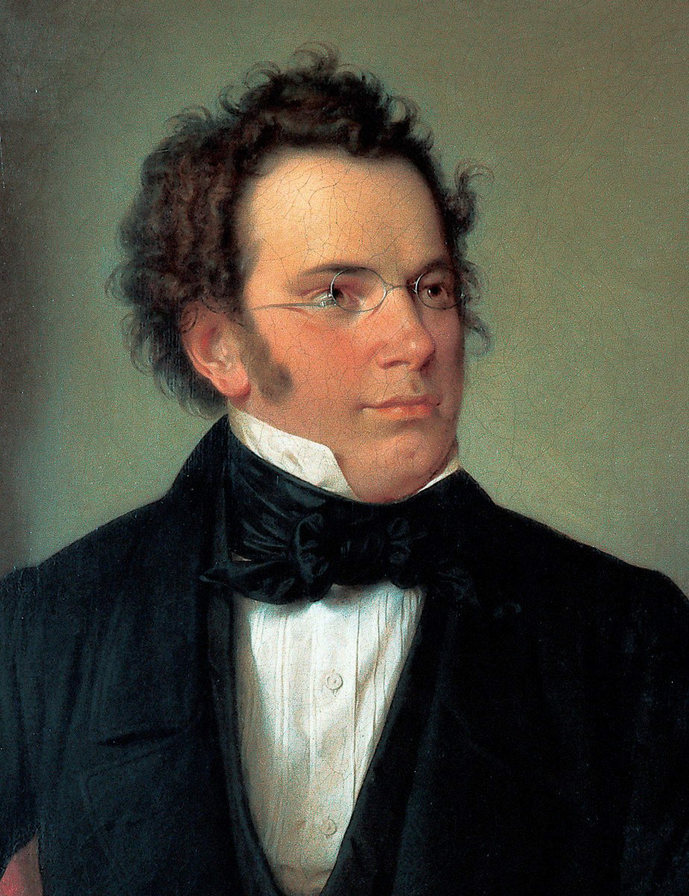
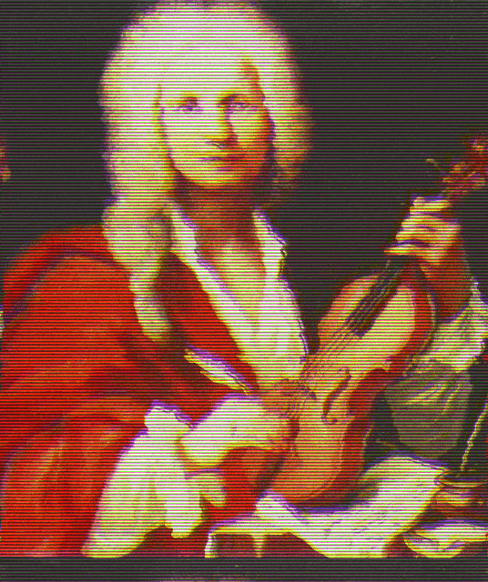
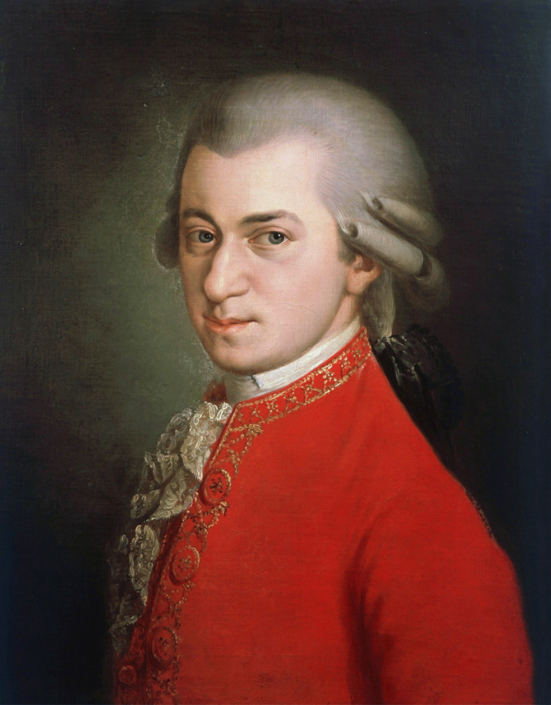
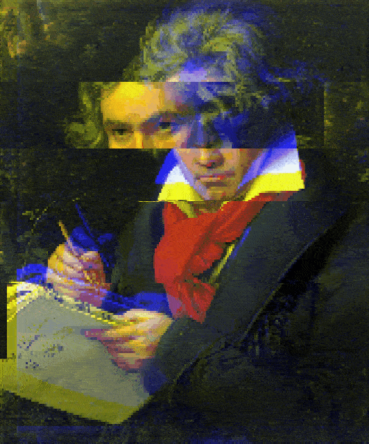

This project aimed to design a model and dataset to create unique classical piano music melodies using sequential neural networks without any human intervention.
The workflow involved creating a dataset of MIDI files from classical piano pieces, applying multifaceted data representation, training a designed model, and triggering the trained model with seed sequences to create unique melodies. The research was published at the IEEE Conference on Signal Processing and Communication Applications with a contribution of a novel data representation approach for simultaneously played notes.
Technologies: Python, TensorFlow, Music21
Dataset Composition:
Preprocessing Techniques:
Quantization: Applied on quaver note basis. Notes with duration less than eighth note are rounded to the nearest duration. All pieces sampled to frequency of eighth note.
Transposition: All major pieces transposed to C Major scale; all minor pieces transposed to A Minor scale. This equalizes pieces in terms of scales and reduces the number of different samples without distorting characteristics.
The main challenge was: How to abstract the music and structure the learning? Pitch and duration were selected as key features.
Text-Based Representation Approach:
Each MIDI note has an integer value. The challenge is that piano is polyphonic—multiple notes can play simultaneously. The solution: represent notes with integers and join simultaneously played notes in one textual representation using the letter 'o' as a separator.
Example: 47o73 represents a chord of B and D notes.
Duration Representation: Gaps between notes are crucial for proper abstraction of musical flow. An integer-represented offset value is appended at the end of the textual representation.
Result: Each timestamp is represented as a string. For each piece: an array of words representing simultaneously played notes and their durations. Total data: 250,800 strings with 5,353 unique classes.
o, and the offset to the next event is appended to the tail — so one
timestamp, however dense, is always exactly one token.
Data Sequencing: Input window of 50 words with target window of 1 word. Each sequence includes both input and target samples.
Architecture: Long Short-Term Memory (LSTM) networks. RNNs allow previous outputs to be used as inputs, but LSTM was chosen because RNN memory alone is too short for musical composition which requires learning long-term history. LSTM transmits information multiple time steps over the network, providing longer-term memory.
Model Configuration:
Inference: The model produces a probability distribution for the next possible notes. The most probable note is selected and appended to the sequence end. The model is triggered repeatedly to generate unique melodies.
Survey Design: 6 melodies were tested: 3 by human musicians (P.I. Tchaikovsky's "The Seasons"), 3 synthesized by the model. All were 17-second compositions presented in random order to 137 participants (average age 23) via online survey, rated on a 1-7 scale.
Key Finding: The average rating difference between Tchaikovsky's compositions and model-generated melodies was small. Melodies produced by the model could not be distinguished from human-made melodies and were perceived as natural.